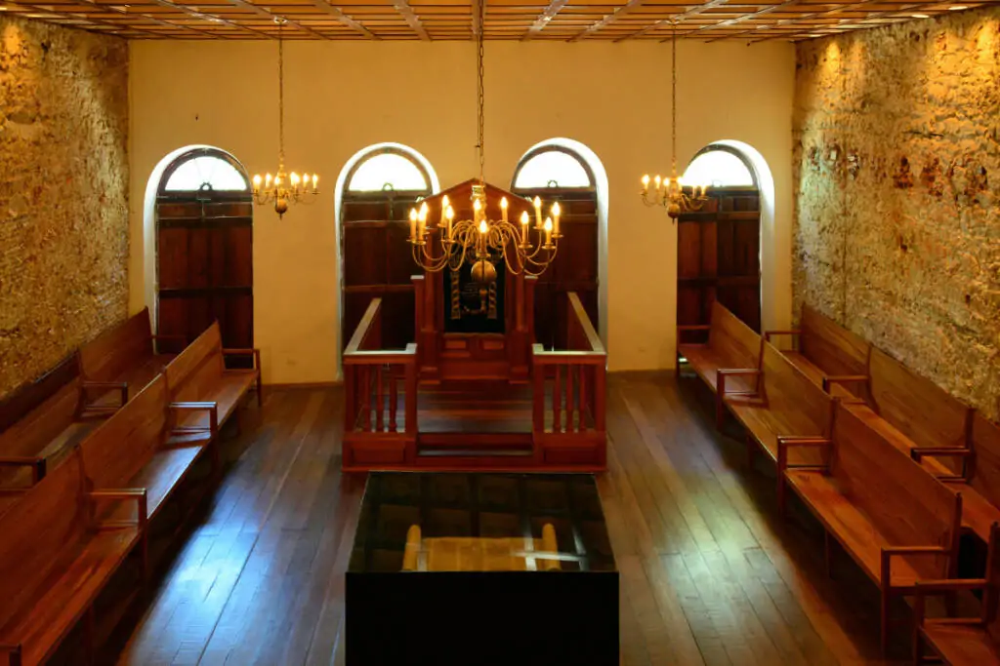
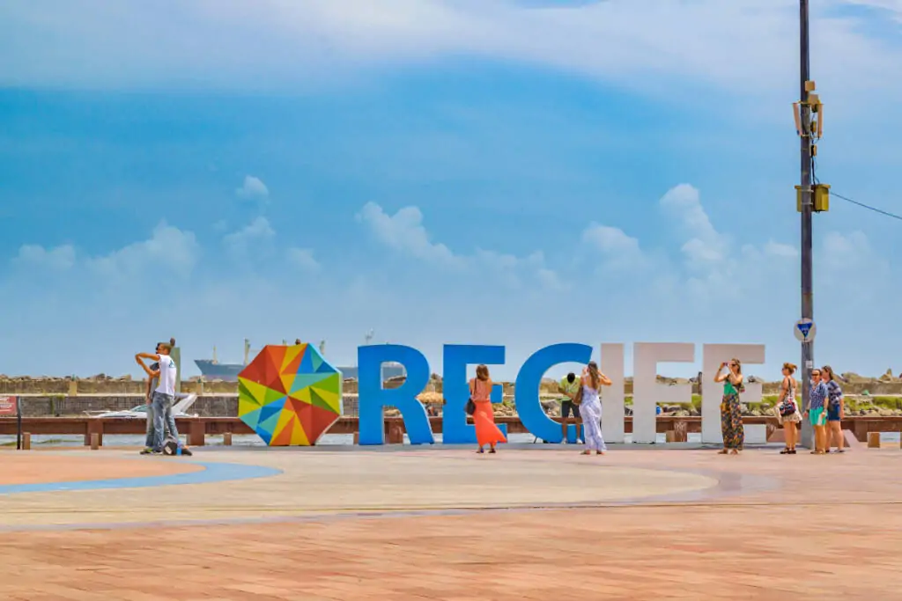

Sobre o Marco Zero
O Marco Zero no Recife Antigo é um dos pontos turísticos mais importantes para quem deseja conhecer a capital de Pernambuco.
Isso porque é um local de importância histórica que conta o nascimento da cidade e possui forte referência cultural.
O Marco Zero no Recife Antigo é o lugar de referência onde a cidade nasceu e todas as medidas oficiais de distâncias rodoviárias
usam como ponto de partida. Seu nome é, na verdade, Praça Rio Branco e fica ao lado do Porto de Pernambuco.
Pode-se dizer que ele se situa no centro histórico da cidade, que é mais conhecido como Recife Antigo por ser a parte onde se iniciou
o povoamento da capital pernambucana. A popularização do nome Marco Zero aconteceu desde 1938, devido à instalação do símbolo geográfico
na parte central da praça. Ele foi uma doação do Automóvel Clube de Pernambuco. Além disso, há nela uma estátua de bronze de 2,80 metros,
de autoria do escultor francês Félix Charpentier.
Principais pontos turísticos ao redor do Marco Zero no Recife Antigo
O passeio no Marco Zero no Recife Antigo acontece às margens do porto velho e permite conhecer palacetes históricos, instalações portuárias, bares, restaurantes e espaços culturais. Confira a seguir as melhores dicas do que fazer no local!
Desde o período de domínio holandês, entre 1630 e 1654, tanto o Marco Zero do Recife Antigo quanto o bairro como um todo tiveram reformas significativas que aconteceram até o início de 1900. Por isso, a arquitetura do local é bastante eclética.
Em resumo, você irá encontrar vitrais com inspiração inglesa, desenhos que remetem ao modernismo, barroco e rococó e escadarias de influência europeia. Três destes prédios se destacam, que são:
Antiga sede do London & River Plate Bank: atualmente é sede de uma empresa de informática e existe visita guiada por suas dependências internas;
Associação Comercial de Pernambuco: o local abriga um acervo histórico importante sobre o comércio da cidade. Além disso, é possível conferir quadros, vitrais, livros e jornais de outras épocas;
Edifício da Caixa Cultural: O prédio teve sua aquisição feita pela Caixa Cultural e atualmente organiza exposições. Anteriormente, foi sede do Bank of London & South America Limited e, em meados de 1960, abrigou a Bolsa de Valores pernambucana.

Visitar as exposições do Museu Cais do Sertão
Para os amantes de artes e culturas, o Museu Cais do Sertão traz referências à cultura do sertão nordestino e oferece experiências interativas
e sensoriais. Além disso, o espaço conta com cursos, palestras e workshops e possui exposições permanentes e temporárias sobre o tema.

Boemia no Marco Zero do Recife Antigo
Por último, não dá para falar do Marco Zero sem considerar as muitas opções de entretenimento nos antigos armazéns ao longo da orla. Para
se ter uma ideia, são bares temáticos, restaurantes com gastronomia local e mundial e points para quem quer diversão, boa música e
entretenimento. Além deles, há opções para os mais diversos bolsos e gostos também na região central do Antigo Recife, em vielas de
pedra sabão e um charme único da capital de Pernambuco.